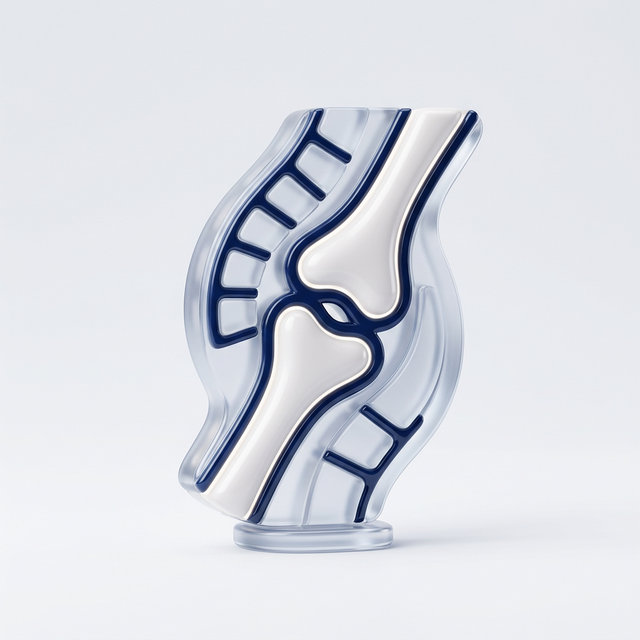

Departments
診療科一覧
当院では以下の診療科にて診療を行っております。各科の専門医が丁寧に対応いたします。

内科
一般内科・総合内科
風邪や生活習慣病から専門的な内科疾患まで幅広く対応。健康診断も実施しています。
詳しく見る →
外科
一般外科・消化器外科
最新の手術技術と豊富な経験で、安全な外科治療を提供します。
詳しく見る →
小児科
小児科・小児アレルギー科
お子さまの健やかな成長をサポート。予防接種や乳幼児健診も実施しています。
詳しく見る →
整形外科
整形外科・リハビリテーション科
骨折・関節痛から慢性的な腰痛まで。リハビリテーションによる機能回復もサポートします。
眼科
眼科
白内障・緑内障・近視治療など。最新の検査機器で精密な診断を行います。
循環器科
循環器内科
高血圧・心臓病・動脈硬化などの循環器疾患を専門的に診療します。